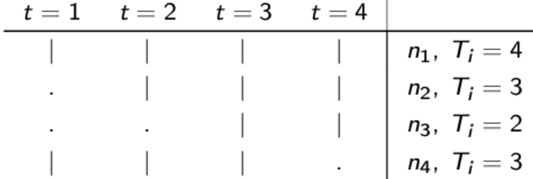
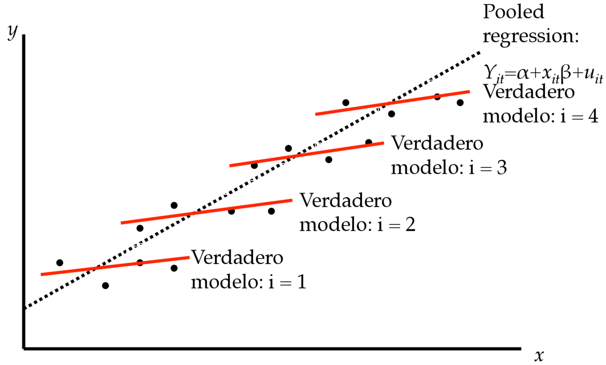

Datos de Panel
Estadísticas de delincuencia a nivel estado para dos años
# A tibble: 6 × 7
state year unem criv crip incpc polpc
<dbl> <dbl> <dbl> <dbl> <dbl> <dbl> <dbl>
1 1 86 0.0983 5.67 37.9 11667. 227.
2 1 90 0.0677 7.07 42.0 14897. 280.
3 2 86 0.109 5.60 55.7 17821. 277.
4 2 90 0.0702 5.21 46.0 20848. 350.
5 3 86 0.0693 6.60 66.8 13993. 288.
6 3 90 0.0532 6.50 72.1 16255. 299.
# A tibble: 6 × 7
state year unem criv crip incpc polpc
<dbl> <dbl> <dbl> <dbl> <dbl> <dbl> <dbl>
1 49 86 0.118 1.68 21.9 11010. 175.
2 49 90 0.0829 1.69 23.3 13947. 179.
3 50 86 0.0705 2.59 38.6 14066. 266.
4 50 90 0.0438 2.64 41.2 17395. 262.
5 51 86 0.0915 3.00 41.5 13264. 333.
6 51 90 0.0531 3.01 39.1 16881. 366.
Datos de Panel
Consideraciones Básicas
En general, los datos se observan a intervalos regulares de tiempo.
Los datos de panel pueden ser balanceados (\(T_{i}=T\) para todo \(i\)) o no balanceados (\(T_{i}\neq T\) para algún \(i\)).
- la selección muestral debe ser aleatoria.
Se pueden tener paneles:
de muchos individuos y pocos períodos temporales (short panels).
de pocos individuos y muchos períodos temporales (long panels).
de muchos individuos y muchos períodos temporales.
Datos de Panel
Consideraciones Básicas
Para paneles balanceados, describir el número de observaciones implica:
Número de individuos distintos \(N\).
Total de periodos cubiertos por el panel \(T\).
El número total de observaciones es simplemente \(NT\).
Para paneles NO balanceados, además debemos considerar:
También se puede presentar el siguiente patrón de observaciones:

Datos de Panel
Modelo de Componentes de Error
Motivación: Supongamos que el verdadero modelo es:
\[y_{i}=\beta_{0}+\beta_{1}x_{1i}+\beta_{2}x_{2i}+u_{i}\] pero estimamos: \[y_{i}=\widetilde{\beta}_{0}+\widetilde{\beta}_{1}x_{1i}+u_{i}\] usando MCO: \[\widetilde{\beta}_{1}=\frac{\sum(x_{1i}-\overline{x}_{1})(y_{i}-\overline{y})}{\sum(x_{1i}-\overline{x}_{1})^{2}}\]
Datos de Panel
Modelo de Componentes de Error
¿Qué sucede con las propiedades de \(\widetilde{\beta}_{1}\)?
\[E[\widetilde{\beta}_{1}]=\beta_{1}+\beta_{2}\frac{\sum(x_{1i}-\overline{x}_{1})(x_{2i}-\overline{x}_2)}{\sum(x_{1i}-\overline{x}_{1})^{2}}\] Sesgo por variables omitidas (la dirección depende de la correlación entre \(x_1\) y \(x_2\)).
Datos de Panel
Modelo de Componentes de Error
Ahora en el contexto de panel: Supongamos que estimamos el siguiente modelo agrupando (pooled) los datos e ignorando la estructura de panel. \[y_{it}=\beta_{0}+\beta_{1}x_{1it}+\beta_{2}x_{2it}+...+\beta_{K}x_{Kit}+u_{it}\] El modelo sufre de sesgo por variable omitidas (heterogeneidad).

Datos de Panel
Modelo de Componentes de Error
Alternativa: Reconocer que existen factores no observados que afectan a la variable dependiente.
\[\begin{aligned}
y_{it} & = \beta_{0}+\beta_{1}x_{1it}+\beta_{2}x_{2it}+...+\beta_{K}x_{Kit}+{u_{it}}\\
& = \beta_{0}+\beta_{1}x_{1it}+\beta_{2}x_{2it}+...+\beta_{K}x_{Kit}+{\alpha_{i}+\delta_{t}+\epsilon_{it}}
\end{aligned}\]
donde:
Datos de Panel
Modelo de Componentes de Error
El efecto temporal \(\delta_{t}\) puede ser estimado usando variable binarias temporales, al igual que en el caso de datos agrupados.
¿Cómo tratamos el efecto individual \(\alpha_{i}\)? La literatura de Panel de Datos se enfoca en este problema.
Caso 1 (\(\alpha_{i}=0\)): En este caso, \(u_{it}=\epsilon_{it}\) satisface todos los supuestos.
\[\begin{aligned}
E[\epsilon_{it}|x_{it}] & = 0\\
E[\epsilon_{it}\epsilon_{hs}] & = \begin{cases}
\sigma^{2} & \textrm{si}\,i=h\,\textrm{y}\,t=s\\
0 & \textrm{si}\,i\neq h\,\textrm{o}\,t\neq s
\end{cases}
\end{aligned}\]
El estimador de MCO es MELI. El panel no agrega información.
Caso 2 (\(\alpha_{i}\neq0\)): Todo depende si el efecto individual está o no correlacionado con las variables explicativas del modelo.
Datos de Panel
El Estimador en Primeras Diferencias
Supongamos que tenemos un panel con \(N\) grande y \(T=2\):
\[\begin{aligned}
y_{i1} & = \beta_{0}+\beta_{1}x_{1i1}+\beta_{2}x_{2i1}+...+\beta_{K}x_{Ki1}+{\alpha_{i}+\epsilon_{i1}}\\
y_{i2} & = \beta_{0}+\beta_{1}x_{1i2}+\beta_{2}x_{2i2}+...+\beta_{K}x_{Ki2}+{\alpha_{i}+\epsilon_{i2}}
\end{aligned}\]
Tomando la diferencia tenemos: \[\Delta y_{i}=\beta_{1}\Delta x_{1i}+\beta_{2}\Delta x_{2i}+...+\beta_{K}\Delta x_{Ki}+\Delta\epsilon_{i}\] Esta es conocida como ecuación en primera diferencia.
Note que el efecto individual desaparece y por tanto MCO puede ser aplicado.
Datos de Panel
El Estimador en Primeras Diferencias
Para obtener estimadores consistentes e insesgados se requiere: \(E[\Delta\epsilon_{i}|\Delta x_{i}]=0\) para todo \(i\).
Variabilidad en \(\Delta x_{i}\) con respecto a \(i\) es requerida.
Variables que no cambian en el tiempo no pueden ser incluidas (es imposible diferenciarlas del efecto individual no observado).
Ejemplo 3: Tasa de criminalidad y la tasa de desempleo
Estamos interesado en la relación entre la tasa de criminalidad y la tasa de desempleo. Planteamos: \[tc_{it}=\beta_{0}+\beta_{1}td_{it}+u_{it}\]
Ejemplo 3: Tasa de criminalidad y la tasa de desempleo
Si ignorando la estructura de panel estimamos:
Call:
lm(formula = crmrte ~ unem, data = db)
Residuals:
Min 1Q Median 3Q Max
-51.686 -23.889 -7.961 17.522 78.297
Coefficients:
Estimate Std. Error t value Pr(>|t|)
(Intercept) 103.2434 8.0587 12.81 <2e-16 ***
unem -0.3077 0.9317 -0.33 0.742
---
Signif. codes: 0 '***' 0.001 '**' 0.01 '*' 0.05 '.' 0.1 ' ' 1
Residual standard error: 29.99 on 90 degrees of freedom
Multiple R-squared: 0.00121, Adjusted R-squared: -0.009888
F-statistic: 0.109 on 1 and 90 DF, p-value: 0.742
Ejemplo 3: Tasa de criminalidad y la tasa de desempleo
Usando un corte transversal en \(t=87\):
Call:
lm(formula = crmrte ~ unem, data = db, subset = year == 87)
Residuals:
Min 1Q Median 3Q Max
-57.55 -27.01 -10.56 18.01 79.75
Coefficients:
Estimate Std. Error t value Pr(>|t|)
(Intercept) 128.378 20.757 6.185 1.8e-07 ***
unem -4.161 3.416 -1.218 0.23
---
Signif. codes: 0 '***' 0.001 '**' 0.01 '*' 0.05 '.' 0.1 ' ' 1
Residual standard error: 34.6 on 44 degrees of freedom
Multiple R-squared: 0.03262, Adjusted R-squared: 0.01063
F-statistic: 1.483 on 1 and 44 DF, p-value: 0.2297
Ejemplo 3: Tasa de criminalidad y la tasa de desempleo
Ahora usando el estimador en primeras diferencias:
Call:
lm(formula = dcrmrte ~ dunem, data = db.p)
Residuals:
Min 1Q Median 3Q Max
-36.912 -13.369 -5.507 12.446 52.915
Coefficients:
Estimate Std. Error t value Pr(>|t|)
(Intercept) 15.4022 4.7021 3.276 0.00206 **
dunem 2.2180 0.8779 2.527 0.01519 *
---
Signif. codes: 0 '***' 0.001 '**' 0.01 '*' 0.05 '.' 0.1 ' ' 1
Residual standard error: 20.05 on 44 degrees of freedom
(46 observations deleted due to missingness)
Multiple R-squared: 0.1267, Adjusted R-squared: 0.1069
F-statistic: 6.384 on 1 and 44 DF, p-value: 0.01519
Ejemplo 3: Tasa de criminalidad y la tasa de desempleo
Alternativamente es posible usar directamente el comando plm declarando previamente la estructura de panel con pdata.frame(dabe_datos, index = c("ivar","tvar")):
Oneway (individual) effect First-Difference Model
Call:
plm(formula = crmrte ~ unem, data = db.p, model = "fd")
Balanced Panel: n = 46, T = 2, N = 92
Observations used in estimation: 46
Residuals:
Min. 1st Qu. Median 3rd Qu. Max.
-36.9124 -13.3693 -5.5072 12.4463 52.9152
Coefficients:
Estimate Std. Error t-value Pr(>|t|)
(Intercept) 15.40219 4.70212 3.2756 0.00206 **
unem 2.21800 0.87787 2.5266 0.01519 *
---
Signif. codes: 0 '***' 0.001 '**' 0.01 '*' 0.05 '.' 0.1 ' ' 1
Total Sum of Squares: 20256
Residual Sum of Squares: 17690
R-Squared: 0.1267
Adj. R-Squared: 0.10685
F-statistic: 6.3836 on 1 and 44 DF, p-value: 0.015189
Análisis de Política con Datos de Panel
Los datos de panel son muy útiles para el análisis de políticas, en particular para la evaluación de programas.
Se requiere un panel de dos periodos, antes y después de haberse aplicado el programa.
Dos grupos:
Tratados: Unidades (personas, empresas, ciudades, etc.) que toman parte en un determinado programa o intervención.
Controles: Unidades que no toman parte del programa.
La idea es similar al uso de datos agrupados. La diferencia importante es que tenemos las mismas unidades antes y después.
Esto permite controlar por la posibilidad de que la participación en el programa este correlacionada con alguna característica no observada.
Análisis de Política con Datos de Panel
Definamos:
\(y_{it}\): variable resultad.
\(prog_{it}\): variable binaria de participación en el programa.
\(d2_{t}\): variable binaria temporal (efecto temporal).
El modelo (simple) de efectos inobservables para la evaluación de política es: \[y_{it}=\beta_{0}+\delta_{0}d2_{t}+\beta_{1}prog_{it}+\alpha_{i}+\epsilon_{it}\]
Diferenciando: \[\Delta y_{it}=\delta_{0}+\beta_{1}\Delta prog_{it}+\epsilon_{it}\]
Análisis de Política con Datos de Panel
Note que: \[\Delta prog_{it}=\left\{ \begin{array}{ccc}
1 & & Tratado\\
0 & & Control
\end{array}\right.\]
dado que el programa sólo ocurrió en el segundo periodo.
El efecto promedio del tratamiento es entonces:
\[\begin{aligned}
\hat{\beta_{1}} & = E[\Delta y_{it}|\Delta prog_{it}=1]-E[\Delta y_{it}|\Delta prog_{it}=0]\\
& = \overline{\Delta y}{}_{Tratado}-\overline{\Delta y}{}_{Control}
\end{aligned}\]
Ejemplo 4: Políticas de capacitación en las empresas
Buscamos evaluar el efecto del programa de capacitación laboral sobre la productividad de los trabajadores (Usar datos JTRAIN de Wooldridge).
Variables resultado: \(\log(scrap_{it})\), Tasa de desperdicio de la industria \(i\) durante el año \(t\)
- Unidad de medida: log del número de artículos, por cada 100, que deben desecharse por estar defectuosos.
Variable programa: \(grant_{it}\), Indicador binario igual a 1 si la empresa \(i\) en el año \(t\) recibió un subsidio para capacitación .laboral.
Ejemplo 4: Políticas de capacitación en las empresas
Ejemplo 4: Análisis de políticas de capacitación en las empresas
Oneway (individual) effect First-Difference Model
Call:
plm(formula = log(scrap) ~ d88 + grant, data = db.p, subset = year %in%
c(1987, 1988), model = "fd")
Balanced Panel: n = 54, T = 2, N = 108
Observations used in estimation: 54
Residuals:
Min. 1st Qu. Median 3rd Qu. Max.
-2.12768 -0.23719 0.02370 0.21420 2.45533
Coefficients:
Estimate Std. Error t-value Pr(>|t|)
(Intercept) -0.057436 0.097206 -0.5909 0.55717
grant -0.317058 0.163875 -1.9348 0.05847 .
---
Signif. codes: 0 '***' 0.001 '**' 0.01 '*' 0.05 '.' 0.1 ' ' 1
Total Sum of Squares: 18.435
Residual Sum of Squares: 17.197
R-Squared: 0.067152
Adj. R-Squared: 0.049213
F-statistic: 3.74327 on 1 and 52 DF, p-value: 0.058469
El subsidio de capacitación laboral reduce la tasa de desperdicio en cerca de 27.2%: \(\exp(-0.317)-1=0.272\).
Datos de Panel
El Estimador en Primeras Diferencias en Paneles con más de dos periodos
¿Qué sucede si \(T>2\)? Tomemos dos periodos luego de diferenciar la ecuación:
\[\begin{aligned}
Cov(\Delta\epsilon_{it},\Delta\epsilon_{it-1}) & = E[\Delta\epsilon_{it}\Delta\epsilon_{it-1}]-E[\Delta\epsilon_{it}]E[\Delta\epsilon_{it-1}]\\
& = E[\Delta\epsilon_{it}\Delta\epsilon_{it-1}]
\end{aligned}\]
donde: \(\Delta\epsilon_{it}=\epsilon_{it}-\epsilon_{it-1}\) y \(\Delta\epsilon_{it-1}=\epsilon_{it-1}-\epsilon_{it-2}\).
Note que: \[E[\Delta\epsilon_{it}\Delta\epsilon_{it-1}]=-\sigma_{\epsilon}^{2}\neq0\] El modelo adolece de un problema de autocorrelación.
Datos de Panel
El Estimador en Primeras Diferencias en Paneles con más de dos periodos
Existen dos modelos alternativo para estimar modelos con componentes no observables. Éstos difieren según el tratamiento de \(\alpha_{i}\):
Modelo de Efectos Fijos: Supone \(Cov(x_{it},\alpha_{i})\neq0\)
Modelo de Efectos Aleatorios: Supone \(Cov(x_{it},\alpha_{i})=0\)
Datos de Panel
Modelo de Efectos Fijos
El Modelo: \[y_{it}=\beta_{0}+\beta_{1}x_{1it}+\beta_{2}x_{2it}+...+\beta_{K}x_{Kit}+\alpha_{i}+\epsilon_{it}\] Los regresores pueden estar correlacionados con \(\alpha_{i}\):
Supuesto fundamental: \[E[\epsilon_{it}|\alpha_{i},x_{it}]=0\]
Los regresores deben seguir estando no correlacionados con \(\epsilon_{it}\).
Datos de Panel
Modelo de Efectos Fijos
Esto implica \(E[y_{it}|\alpha_{i},x_{it}]=\beta_{0}+\beta_{1}x_{1it}+\beta_{2}x_{2it}+...+\beta_{K}x_{Kit}+\alpha_{i}\) y por tanto: \[\frac{\partial E[y_{it}|\alpha_{i},x_{it}]}{\partial x_{jit}}=\beta_{j}\]
Se puede identificar el efecto marginal aunque el regresor sea endógeno (respecto del error compuesto).
Datos de Panel
Modelo de Efectos Fijos
Algunos problemas de estimación:
En principio, se necesitan estimar \(\alpha_{1},...,\alpha_{N}\) junto con los parámetros \(\beta\) (\(N+K\)).
En paneles cortos, la estimación de los parámetros necesita \(N\rightarrow\infty\).
La estimación de los \(\beta\) podría estar sesgada por estimar “infinitos” parámetros auxiliares \(\alpha_{i}\).
Alternativamente, se puede estimar el modelo transformado para eliminar \(\alpha_{i}\).
- Sólo se identifica \(\beta\) para regresores que varían en el tiempo.
Datos de Panel
Modelo de Efectos Fijos
Estimar consistentemente puede NO ser suficiente:
- Para predecir \(y_{it}\): \[E[y_{it}|x_{it}]=x_{it}\beta+E[\alpha_{i}|x_{it}]\] en paneles cortos, \(E[\alpha_{i}|x_{it}]\) no se estima consistentemente.
Datos de Panel
Modelo de Efectos Fijos
El modelo era: \[y_{it}=\beta_{0}+\beta_{1}x_{1it}+\beta_{2}x_{2it}+...+\beta_{K}x_{Kit}+\alpha_{i}+\epsilon_{it}\] Las realizaciones de \(\alpha_{i}\) sólo pueden ser estimadas con un panel. Supuestos: \[\begin{array}{ccc}
E[\epsilon_{it}|x]=0 & & Var[\epsilon_{it}]=\sigma_{\epsilon}^{2}\\
E[\alpha_{i}\alpha_{j}]=0\,j\neq i & & Var[\alpha_{i}]=\sigma_{\alpha}^{2}\\
E[\alpha_{i}\epsilon_{it}]=0 & & E[\alpha_{i}]=0
\end{array}\]
Note que: \[E[x_{kit}u_{it}]=E[x_{kit}\alpha_{i}]\neq0\,\,\,\,\,\,\,\forall k=1,..,K\]
Datos de Panel
Modelo de Efectos Fijos
El modelo puede ser visto como un modelo lineal en donde cada individuo tiene su intercepto: \[y_{it}=\underbrace{\alpha_{i}}+\beta_{1}x_{1it}+\beta_{2}x_{2it}+...+\beta_{K}x_{Kit}+\epsilon_{it}\] El modelo se puede estimar por MCO con \(N\) variables ficticias por individuo.
Datos de Panel
Modelo de Efectos Fijos
La estimación del modelo se puede realizar incluyendo \(N-1\) variables binarias por individuo: \[y_{it}=\alpha_{1}+\alpha_{2}d_{2it}+...+\alpha_{N}d_{Nit}+\beta_{1}x_{1it}+\beta_{2}x_{2it}+...+\beta_{K}x_{Kit}+\epsilon_{it}\]
Donde: \[d_{jit}=\begin{cases}
1 & Individuo\,j\\
0 & e.c.o.c.
\end{cases}\]
Entonces, el estimador de efectos fijos (EF) es el estimador de MCO agregando \(N-1\) variables dummy (una por cada por individuo, exepto 1).
Note que éste estimador genera los problemas mencionados antes cuando \(N\rightarrow\infty\).
Datos de Panel
Modelo de Efectos Fijos
Efectos Fijos y la Transformación “Within”: El modelo era: \[y_{it}=\beta_{0}+\beta_{1}x_{1it}+\beta_{2}x_{2it}+...+\beta_{K}x_{Kit}+\alpha_{i}+\epsilon_{it}\] Tomando promedios por individuo: \[\bar{y}_{i}=\beta_{0}+\beta_{1}\bar{x}_{1i}+\beta_{2}\bar{x}_{2i}+...+\beta_{K}\bar{x}_{Ki}+\alpha_{i}+\bar{\epsilon}_{it}\] donde: \[\bar{y}_{i}=\frac{1}{T}\sum_{t=1}^{T}y_{it}\,\,\,\,\,\bar{x}_{ki}=\frac{1}{T}\sum_{t=1}^{T}x_{kit}\,\,\,\,\,\bar{\epsilon}_{i}=\frac{1}{T}\sum_{t=1}^{T}\epsilon_{it}\]
Datos de Panel
Modelo de Efectos Fijos
Restando: \[y_{it}-\bar{y}_{i}=\beta_{1}\left(x_{1it}-\bar{x}_{1i}\right)+\beta_{2}\left(x_{2it}-\bar{x}_{2i}\right)+...+\beta_{K}\left(x_{Kit}-\bar{x}_{Ki}\right)+\epsilon_{it}-\bar{\epsilon}_{i}\] o alternativamente: \[\ddot{y}_{it}=\beta_{1}\ddot{x}_{1it}+\beta_{2}\ddot{x}_{2it}+...+\beta_{K}\ddot{x}_{Kit}+\ddot{\epsilon}_{it}\]
El estimador de efectos fijos (EF) es el estimador MCO del modelo en desvíos respecto a las medias individuales.
Datos de Panel
Modelo de Efectos Fijos
Entonces, existen dos formas idénticas de computar el estimador de efectos fijos (EF) (Teorema de Frisch,Waugh, Lovell):
Regresión de \(y_{it}\) sobre \(x_{it}=(x_{1it},...,x_{Kit})\) y variables dummy por individuo.
Regresión de \(y_{it}-\bar{y}_{i}\) sobre \(\bar{x}_{it}-\bar{x}_{i}=(x_{1it}-\bar{x}_{1i},...,x_{Kit}-\bar{x}_{Ki})\)
Propiedades del estimador de efectos fijos (EF)
Es insesgado (\(x_{it}=(x_{1it},...,x_{Kit})\) y \(d_{it}=(d_{1it},...,d_{Nit})\) son exógenas con respecto a \(\epsilon_{it}\)).
Es consistente, cuando \(N\rightarrow\infty\) o \(T\rightarrow\infty\). Importante: la insesgadez y consistencia del estimador no supone que \(x_{it}\) y \(d_{it}\) son ortogonales (puede haber correlación entre ellos).
Datos de Panel
Modelo de Efectos Fijos
Control de heterogeneidad: Supongamos que el modelo es: \[y_{it}=\beta_{0}+\beta x_{it}+\phi z_{i}+\alpha_{i}+\epsilon_{it}\] La transformación “within” de este modelo es: \[\ddot{y}_{it}=\ddot{x}_{it}\beta+\ddot{\epsilon}_{it}\] La transformación elimina cualquier variable que no varia en el tiempo:
Si \(z_{i}\) es observable, ésta no puede ser usada en el modelo.
Si \(z_{i}\) es no observable, estimar EF permite “controlar” por su presencia.
Este es el sentido en el cual la disponibilidad de paneles permite controlar por variables omitidas que no varían en el tiempo.
Datos de Panel
Modelo de Efectos Fijos
Test de Significancia de los Efectos Fijos:
\[\begin{aligned}
H_{0} & : \alpha_{2}=\alpha_{3}=...=\alpha_{N}=0\\
H_{1} & : \text{Al menos uno es significativo}
\end{aligned}\]
Este es un test de Chow donde:
\(SCR_{R}\) Modelo que aplica MCO agrupados
\(SCR_{NR}\) Regresión con Variables Dummy (si \(N\) es muy grande, se usa el Estimador “Within”).
\[F=\frac{(SCR_{R}-SCR_{NR})/N-1}{SCR_{R}/(NT-N-K)}\sim F_{N-1,NT-N-K}\]
Ejemplo 5: Ecuación de Mincer y los Retornos de la Educación
\[ln(w_{it})=\beta_{0}+\beta_{1}e_{it}+\beta_{2}x_{it}+\beta_{3}x_{it}^{2}+z_{it}\delta+{\alpha_{i}+\epsilon_{it}}\]
\(w_{it}\) salario.
\(e_{it}\) educación.
\(x_{it}\) experiencia.
\(z_{it}\) incluye controles tales como raza, genero, estado civil, pertenencia a un sindicato, etc.
Estamos interesados en el parámetro \(\beta_{1}\) y usamos datos de Vella y Verbeek (1998): Panel balanceado de \(N=545\) y \(T=8\). Problema: \(e_{it}\) no tiene variabilidad temporal.
Ejemplo 5: Ecuación de Mincer y los Retornos de la Educación
MCO Agrupados:
Call:
lm(formula = lwage ~ educ + exper + I(exper^2) + union + black +
hisp + married, data = db)
Residuals:
Min 1Q Median 3Q Max
-5.2689 -0.2487 0.0332 0.2962 2.5608
Coefficients:
Estimate Std. Error t value Pr(>|t|)
(Intercept) -0.0347056 0.0645690 -0.537 0.591
educ 0.0993878 0.0046776 21.248 < 2e-16 ***
exper 0.0891791 0.0101110 8.820 < 2e-16 ***
I(exper^2) -0.0028487 0.0007074 -4.027 5.74e-05 ***
union 0.1800725 0.0171205 10.518 < 2e-16 ***
black -0.1438417 0.0235595 -6.105 1.11e-09 ***
hisp 0.0156980 0.0208112 0.754 0.451
married 0.1076656 0.0156965 6.859 7.90e-12 ***
---
Signif. codes: 0 '***' 0.001 '**' 0.01 '*' 0.05 '.' 0.1 ' ' 1
Residual standard error: 0.4807 on 4352 degrees of freedom
Multiple R-squared: 0.1866, Adjusted R-squared: 0.1853
F-statistic: 142.6 on 7 and 4352 DF, p-value: < 2.2e-16
Ejemplo 5: Ecuación de Mincer y los Retornos de la Educación
Usamos la estructura de panel:
black exper hisp married educ union lwage
13-1980 0 1 0 0 14 0 1.1975400
13-1981 0 2 0 0 14 1 1.8530600
13-1982 0 3 0 0 14 0 1.3444620
13-1983 0 4 0 0 14 0 1.4332130
13-1984 0 5 0 0 14 0 1.5681250
13-1985 0 6 0 0 14 0 1.6998910
13-1986 0 7 0 0 14 0 -0.7202626
13-1987 0 8 0 0 14 0 1.6691880
17-1980 0 4 0 0 13 0 1.6759620
17-1981 0 5 0 0 13 0 1.5183980
17-1982 0 6 0 0 13 0 1.5591910
17-1983 0 7 0 0 13 0 1.7254100
17-1984 0 8 0 0 13 0 1.6220220
17-1985 0 9 0 0 13 0 1.6085880
17-1986 0 10 0 0 13 0 1.5723850
Ejemplo 5: Ecuación de Mincer y los Retornos de la Educación
Estimador en primeras diferencias:
Oneway (individual) effect First-Difference Model
Call:
plm(formula = lwage ~ educ + exper + I(exper^2) + union + black +
hisp + married, data = db.p, model = "fd")
Balanced Panel: n = 545, T = 8, N = 4360
Observations used in estimation: 3815
Residuals:
Min. 1st Qu. Median 3rd Qu. Max.
-4.583845 -0.146169 -0.012659 0.132687 4.836556
Coefficients:
Estimate Std. Error t-value Pr(>|t|)
(Intercept) 0.1157500 0.0195867 5.9096 3.729e-09 ***
I(exper^2) -0.0038824 0.0013863 -2.8005 0.005128 **
union 0.0427878 0.0196575 2.1767 0.029566 *
married 0.0381377 0.0229283 1.6633 0.096325 .
---
Signif. codes: 0 '***' 0.001 '**' 0.01 '*' 0.05 '.' 0.1 ' ' 1
Total Sum of Squares: 751.19
Residual Sum of Squares: 748.04
R-Squared: 0.0042035
Adj. R-Squared: 0.0034196
F-statistic: 5.36242 on 3 and 3811 DF, p-value: 0.0011047
Ejemplo 5: Ecuación de Mincer para Medir los Retornos de la Educación
Estimador Within (efectos fijos):
Oneway (individual) effect Within Model
Call:
plm(formula = lwage ~ educ + exper + I(exper^2) + union + black +
hisp + married, data = db, model = "within")
Balanced Panel: n = 545, T = 8, N = 4360
Residuals:
Min. 1st Qu. Median 3rd Qu. Max.
-4.172622 -0.125701 0.009253 0.159577 1.470169
Coefficients:
Estimate Std. Error t-value Pr(>|t|)
exper 0.11684669 0.00841968 13.8778 < 2.2e-16 ***
I(exper^2) -0.00430089 0.00060527 -7.1057 1.422e-12 ***
union 0.08208713 0.01929073 4.2553 2.138e-05 ***
married 0.04530333 0.01830968 2.4743 0.01339 *
---
Signif. codes: 0 '***' 0.001 '**' 0.01 '*' 0.05 '.' 0.1 ' ' 1
Total Sum of Squares: 572.05
Residual Sum of Squares: 470.2
R-Squared: 0.17804
Adj. R-Squared: 0.059852
F-statistic: 206.375 on 4 and 3811 DF, p-value: < 2.22e-16
Ejemplo 5: Ecuación de Mincer para Medir los Retornos de la Educación
Estimador Within con Variables Dummy Temporales:
Oneway (individual) effect Within Model
Call:
plm(formula = lwage ~ educ + exper + I(exper^2) + union + black +
hisp + married + educ:d81 + educ:d82 + educ:d83 + educ:d84 +
educ:d85 + educ:d86 + educ:d87, data = db.p, model = "within")
Balanced Panel: n = 545, T = 8, N = 4360
Residuals:
Min. 1st Qu. Median 3rd Qu. Max.
-4.155670 -0.122980 0.010886 0.155469 1.490770
Coefficients:
Estimate Std. Error t-value Pr(>|t|)
exper 0.17048409 0.02729410 6.2462 4.669e-10 ***
I(exper^2) -0.00596719 0.00085759 -6.9581 4.044e-12 ***
union 0.07941944 0.01930557 4.1138 3.974e-05 ***
married 0.04747242 0.01831126 2.5925 0.009564 **
educ:d81 -0.00104501 0.00260662 -0.4009 0.688513
educ:d82 -0.00624542 0.00410232 -1.5224 0.127990
educ:d83 -0.01136451 0.00568061 -2.0006 0.045509 *
educ:d84 -0.01356808 0.00722194 -1.8787 0.060358 .
educ:d85 -0.01616557 0.00870137 -1.8578 0.063272 .
educ:d86 -0.01699123 0.01011152 -1.6804 0.092965 .
educ:d87 -0.01674211 0.01145253 -1.4619 0.143859
---
Signif. codes: 0 '***' 0.001 '**' 0.01 '*' 0.05 '.' 0.1 ' ' 1
Total Sum of Squares: 572.05
Residual Sum of Squares: 468.42
R-Squared: 0.18115
Adj. R-Squared: 0.061685
F-statistic: 76.5056 on 11 and 3804 DF, p-value: < 2.22e-16
Datos de Panel
Errores Estándar del Modelo de Efectos Fijos
Hasta ahora hemos supuesto que \(E[\epsilon_{it} \epsilon_{js}] = 0\) para todo \(i \neq j\) y \(t \neq s\) y que \(V[\epsilon_{it}] = \sigma^2_{\epsilon}\).
Si bien las muestras son aleatorias en las unidades \(i\), y es razonable suponer que no existe correlación entre ellas, es perfectamente posible que exista correlación temporal al interior de las unidades de corte transversal.
Podrían existir variables omitidas autocorrelacionadas (cuyos efectos persisten en el tiempo), que generan la misma autocorrelación en los errores a nivel de individuo.
Datos de Panel
Errores Estándar del Modelo de Efectos Fijos
- Si los errores están autocorrelacionados, la los errores estándares de MCO no son adecuados. Usaremos el concepto de errores estándar agrupados (clusters): \[E\left[\epsilon_{i,t} \epsilon_{j,s}\right]=\left\{\begin{array}{ll}0 & \text { si } i\neq j \\ \sigma_{i,(t,s)} & \text { si } i = j\end{array}\right.\] lo que supone una correlación arbitraria al interior del grupo. Los \(\sigma_{i,(t,s)}\) son estimados con los otros parámetros del modelo.
Ejemplo 5: Ecuación de Mincer y los Retornos de la Educación
Estimador Within con Errores Estándar Agrupados:
t test of coefficients:
Estimate Std. Error t value Pr(>|t|)
exper 0.1704841 0.0353857 4.8179 1.508e-06 ***
I(exper^2) -0.0059672 0.0010223 -5.8372 5.752e-09 ***
union 0.0794194 0.0226715 3.5030 0.0004653 ***
married 0.0474724 0.0209886 2.2618 0.0237648 *
educ:d81 -0.0010450 0.0033433 -0.3126 0.7546296
educ:d82 -0.0062454 0.0053061 -1.1770 0.2392594
educ:d83 -0.0113645 0.0073961 -1.5366 0.1244846
educ:d84 -0.0135681 0.0096119 -1.4116 0.1581508
educ:d85 -0.0161656 0.0114950 -1.4063 0.1597121
educ:d86 -0.0169912 0.0133361 -1.2741 0.2027146
educ:d87 -0.0167421 0.0150419 -1.1130 0.2657642
---
Signif. codes: 0 '***' 0.001 '**' 0.01 '*' 0.05 '.' 0.1 ' ' 1
Datos de Panel
Modelo de Efectos Fijos y Paneles Desbalanceados
Las mismas ideas vistas hasta ahora aplican para paneles desbalanceados.
Por ejemplo, en la transformación Within usamos: \[\bar{y}_{i}=\frac{1}{T_{i}}\sum_{t=1}^{T_{i}}y_{it}\,\,\,\,\,\bar{x}_{ki}=\frac{1}{T_{i}}\sum_{t=1}^{T_{i}}x_{kit}\,\,\,\,\,\bar{\epsilon}_{i}=\frac{1}{T_{i}}\sum_{t=1}^{T_{i}}\epsilon_{it}\]
Lo difícil en paneles desbalanceados es determinar porqué el panel está desbalanceado.
- Atrición: La razón por la que la unidad de corte transversal deja la muestra está correlacionada con el error idiosincrático \(\epsilon_{it}\) (lo que es posible con efectos fijos es atrición con respecto al componente no observable \(\alpha_{i}\)).
Datos de Panel
Efectos Fijos vs. Estimador en Diferencias
Efectos fijos y primeras diferencias son exactamente iguales si \(T=2\).
Para \(T>2\), los dos métodos son deferentes. Probablemente el modelo de efectos fijos se usa más porque es más fácil de implementar y es mejor (eficiencia).
El modelo de efectos fijos puede ser rápidamente implementado para paneles desbalanceados.
Datos de Panel
Modelo de Efectos Aleatorios
El efecto individual \(\alpha_{i}\) se trata como puramente aleatorio.
- Debe especificarse su distribución, condicional en los regresores.
Supuesto habitual: \(\alpha_{i}\) no está correlacionado con los regresores del modelo y \(\alpha_{i}|x_{it}\sim N(0,\sigma_{\alpha}^{2})\)
Se puede estimar el modelo por MCGF:
Todos los coeficientes y efectos marginales, incluyendo de las variables que no varían en el tiempo.
La predicción \(E[y_{it}|x_{1it},...,x_{Kit}]\).
PERO la estimación es inconsistente si el supuesto sobre la distribución de \(i\) es incorrecto
- Esto es, sí \(\alpha_{i}\) está correlacionado con los regresores.
Datos de Panel
Modelo de Efectos Aleatorios
El modelo es el mismo
\[y_{it}=\beta_{0}+\beta_{1}x_{1it}+\beta_{2}x_{2it}+...+\beta_{K}x_{Kit}+\alpha_{i}+\epsilon_{it}\] con EF estimábamos: \[y_{it}=\alpha_{1}+\alpha_{2}d_{2it}+...+\alpha_{N}d_{Nit}+\beta_{1}x_{1it}+\beta_{2}x_{2it}+...+\beta_{K}x_{Kit}+\epsilon_{it}\] Si \(d_{it}\) es ortogonal a \(x_{it}\), esto es \(E(\alpha_{i}|x)=0\), entonces el estimador de MCO de la regresión entre \(y_{it}\) y \(x_{it}\) es insesgado.
Es decir, si \(d_{it}\) es ortogonal a \(x_{it}\), la omisión de las variables binarias no sesga al estimador de MCO.
Datos de Panel
Modelo de Efectos Aleatorios
Es mas una cuestión de tratamiento: \[y_{it}=\beta_{0}+\beta_{1}x_{1it}+\beta_{2}x_{2it}+...+\beta_{K}x_{Kit}+\alpha_{i}+\epsilon_{it}\]
Efectos fijos (controla por \(\alpha_{i}\)): \[y_{it}={\beta_{0}+\alpha_{i}}+\beta_{1}x_{1it}+\beta_{2}x_{2it}+...+\beta_{K}x_{Kit}+\epsilon_{it}\]
Efectos aleatorios (tratar \(\alpha_{i}\) como variables omitidas):
\[\begin{aligned}
y_{it} & = \beta_{0}+\beta_{1}x_{1it}+\beta_{2}x_{2it}+...+\beta_{K}x_{Kit}+{u_{it}}\\
u_{it} & = \alpha_{i}+\epsilon_{it}
\end{aligned}\]
Datos de Panel
Modelo de Efectos Aleatorios
El modelo:
\[\begin{aligned}
y_{it} & = \beta_{0}+\beta_{1}x_{1it}+\beta_{2}x_{2it}+...+\beta_{K}x_{Kit}+u_{it}\\
u_{it} & = \alpha_{i}+\epsilon_{it}
\end{aligned}\]
Los supuestos: \[\begin{array}{ccc}
E[\epsilon_{it}|x_{it}]=0 & & Var[\epsilon_{it}]=\sigma_{\epsilon}^{2}\\
E[\alpha_{i}\alpha_{j}]=0\,\,\,j\neq i & & E[\alpha_{i}\alpha_{i}]=\sigma_{\alpha}^{2}\\
E[\alpha_{i}\epsilon_{it}]=0 & & E[\alpha_{i}|x_{it}]=0
\end{array}\]
Datos de Panel
Modelo de Efectos Aleatorios
Problema: \(u_{it}\) no satisface los supuestos clásicos, aún cuando por separado lo hagan \(\alpha_{i}\) y \(\epsilon_{it}\).
\[\begin{aligned}
Var(u_{it}) & = \sigma_{\alpha}^{2}+\sigma_{\epsilon}^{2}\\
Cov(u_{it},u_{is}) & = E[u_{it}u_{is}]=\sigma_{\alpha}^{2}\,\,\,\,\,t\neq s\\
Corr(u_{it},u_{is}) & = \frac{\sigma_{\alpha}^{2}}{\sigma_{\alpha}^{2}+\sigma_{\epsilon}^{2}}\,\,\,\,\,t\neq s
\end{aligned}\]
Datos de Panel
Modelo de Efectos Aleatorios
Intuición:
Trivialmente, \(u_{it}\) está correlacionado con \(u_{it-1}\) ya que ambos “comparten” \(\alpha_{i}\): la presencia permanente de \(\alpha_{i}\) hace que la especificación de efectos aleatorios induzca autocorrelación.
Si bien MCO es insesgado, no es eficiente, por la presencia de autocorrelación.
¿Cuál es el Estimador Eficiente? Mínimos Cuadrados Generalizados (MCG).
Datos de Panel
Modelo de Efectos Aleatorios
La transformación de MCG que elimina la correlación serial en los errores es: \[\lambda=1-\sqrt{\frac{\sigma_{\epsilon}^{2}}{T\sigma_{\alpha}^{2}+\sigma_{\epsilon}^{2}}}\] que está entre cero y uno. Por tanto, la ecuación transformada resulta ser: \[\tilde{y}_{it}=\tilde{\beta}_{0}+\beta_{1}\tilde{x}_{1it}+...+\beta_{K}\tilde{x}_{Kit}+\tilde{u}_{it}\] con: \[\tilde{y}_{it} = y_{it}-\lambda\overline{y}_{i}\ \ \ \ \ \tilde{x}_{kit} = x_{kit}-\lambda\overline{x}_{ki} \ \ \ \ \ \tilde{\beta}_{0} = \beta_{0}(1-\lambda)\]
y donde la barra superior vuelve a indicar los promedios a lo largo del tiempo.
Ahora \(\tilde{u}_{it}\) no está autocorrelacionado.
Datos de Panel
Modelo de Efectos Aleatorios
Comentarios:
Datos de Panel
Modelo de Efectos Aleatorios
Procedimiento para estimar el modelo de Efectos Aleatorios:
- Estimar modelo mediante la transformación “Within”: \[\ddot{y}_{it}=\beta_{1}\ddot{x}_{1it}+...+\beta_{K}\ddot{x}_{Kit}+\ddot{\epsilon}_{it}\]
con lo que tendríamos: \[\hat{\sigma}_{\epsilon}^{2}=\frac{\sum_{t=1}^{T}\sum_{i=1}^{N}\hat{\ddot{\epsilon_{it}}}^{2}}{NT-N-K}\]
Datos de Panel
Modelo de Efectos Aleatorios
- Estimar el modelo “Between” (usando solo datos de corte transversal): \[\bar{y}_{i}=\beta_{1}\bar{x}_{1i}+...+\beta_{K}\bar{x}_{Ki}+u_{iB}\]
donde \(u_{iB}=\alpha_{i}+\bar{\epsilon}_{i}\). Tendríamos entonces: \[\hat{\sigma}_{B}^{2}=\frac{\sum_{i=1}^{N}\hat{u}_{iB}}{N-K}\]
Datos de Panel
Modelo de Efectos Aleatorios
Recuperar la varianza del componente individual \(\alpha_{i}\): \[\hat{\sigma}_{\alpha}^{2}=\hat{\sigma}_{B}^{2}-\frac{\hat{\sigma}_{\epsilon}^{2}}{T}\]
Usando \(\hat{\sigma}_{\epsilon}^{2}\) y \(\hat{\sigma}_{\alpha}^{2}\) es posible aplicar MCG: \[\tilde{y}_{it}=\tilde{\beta}_{0}+\beta_{1}\tilde{x}_{1it}+...+\beta_{K}\tilde{x}_{Kit}+\tilde{u}_{it}\] con: \[\tilde{y}_{it} = y_{it}-\hat{\lambda}\overline{y}_{i} \ \ \ \ \ \
\tilde{x}_{kit} = x_{kit}-\hat{\lambda}\overline{x}_{ki} \ \ \ \ \ \
\tilde{\beta}_{0} = \beta_{0}(1-\hat{\lambda}) \ \ \ \ \ \ \ \hat{\lambda}=1-\sqrt{\frac{\hat{\sigma}_{\epsilon}^{2}}{T\hat{\sigma}_{\alpha}^{2}+\hat{\sigma}_{\epsilon}^{2}}}\]
Ejemplo 5: Retomando el ejemplo de la ecuación de Mincer
Estimador Between:
Oneway (individual) effect Between Model
Call:
plm(formula = lwage ~ educ + exper + I(exper^2) + union + black +
hisp + married, data = db.p, model = "between")
Balanced Panel: n = 545, T = 8, N = 4360
Observations used in estimation: 545
Residuals:
Min. 1st Qu. Median 3rd Qu. Max.
-1.124205 -0.238940 0.024621 0.230350 1.737517
Coefficients:
Estimate Std. Error t-value Pr(>|t|)
(Intercept) 0.4923090 0.2210094 2.2275 0.0263243 *
educ 0.0946036 0.0109043 8.6758 < 2.2e-16 ***
exper -0.0504371 0.0503326 -1.0021 0.3167577
I(exper^2) 0.0051245 0.0032118 1.5955 0.1111866
union 0.2706765 0.0465645 5.8129 1.054e-08 ***
black -0.1388124 0.0488709 -2.8404 0.0046768 **
hisp 0.0047758 0.0426925 0.1119 0.9109724
married 0.1436637 0.0411983 3.4871 0.0005282 ***
---
Signif. codes: 0 '***' 0.001 '**' 0.01 '*' 0.05 '.' 0.1 ' ' 1
Total Sum of Squares: 83.06
Residual Sum of Squares: 64.852
R-Squared: 0.21922
Adj. R-Squared: 0.20904
F-statistic: 21.5386 on 7 and 537 DF, p-value: < 2.22e-16
Ejemplo 5: Retomando el ejemplo de la ecuación de Mincer
Estimador de Efectos Aleatorios
Oneway (individual) effect Random Effect Model
(Swamy-Arora's transformation)
Call:
plm(formula = lwage ~ educ + exper + I(exper^2) + union + black +
hisp + married, data = db.p, model = "random")
Balanced Panel: n = 545, T = 8, N = 4360
Effects:
var std.dev share
idiosyncratic 0.1234 0.3513 0.539
individual 0.1053 0.3246 0.461
theta: 0.6426
Residuals:
Min. 1st Qu. Median 3rd Qu. Max.
-4.578978 -0.144596 0.023473 0.185993 1.538488
Coefficients:
Estimate Std. Error z-value Pr(>|z|)
(Intercept) -0.10746420 0.11070573 -0.9707 0.3316880
educ 0.10122461 0.00891329 11.3566 < 2.2e-16 ***
exper 0.11211949 0.00826087 13.5724 < 2.2e-16 ***
I(exper^2) -0.00406885 0.00059183 -6.8751 6.195e-12 ***
union 0.10737885 0.01783001 6.0224 1.719e-09 ***
black -0.14413069 0.04761483 -3.0270 0.0024698 **
hisp 0.02015107 0.04260112 0.4730 0.6362008
married 0.06279512 0.01677285 3.7439 0.0001812 ***
---
Signif. codes: 0 '***' 0.001 '**' 0.01 '*' 0.05 '.' 0.1 ' ' 1
Total Sum of Squares: 656.91
Residual Sum of Squares: 539.82
R-Squared: 0.17824
Adj. R-Squared: 0.17692
Chisq: 943.951 on 7 DF, p-value: < 2.22e-16
Datos de Panel
Contraste de Efectos Aleatorios de Breusch y Pagan (1980)
Considere las siguientes hipótesis: \[\begin{aligned}
H_{0} & : \sigma_{\alpha}^{2}=0\,\,\,\,(Corr(u_{it},u_{is})=0)\\
H_{1} & : \sigma_{\alpha}^{2}\neq0
\end{aligned}\]
El test de los multiplicadores de Lagrange derivado por estos autores usa el siguiente estadístico: \[LM=\frac{nT}{2(T-1)}\left[\frac{\sum_{i=1}^{n}\left(\sum_{t=1}^{T}\hat{u}_{it}\right)^{2}}{\sum_{i=1}^{n}\sum_{t=1}^{T}\hat{u}_{it}^{2}}-1\right]\sim\chi^{2}(1)\]
Datos de Panel
Efectos Fijos vs. Efectos Aleatorios
El modelo:
\[\begin{aligned}
y_{it} & = \beta_{0}+\beta_{1}x_{1it}+\beta_{2}x_{2it}+...+\beta_{K}x_{Kit}+u_{it}\\
u_{it} & = \alpha_{i}+\epsilon_{it}
\end{aligned}\]
\(Cov(x_{kit},\alpha_{i})=0\): MCO, EF, EA y Between son todos consistentes para los \(\beta\). EA es eficiente.
\(Cov(x_{kit},\alpha_{i})\neq0\): Sólo EF es consistente para los \(\beta\).
La practica gravita mayoritariamente a EF.
Datos de Panel
Efectos Fijos vs. Efectos Aleatorios
El estimador de Efectos Fijos permite estimar el modelo bajo supuestos menos restrictivos.
PERO es menos deseable en otras dimensiones:
El estimador de Efectos Aleatorios es más eficiente.
Datos de Panel
Efectos Fijos vs. Efectos Aleatorios
Contraste de Hausman:
Bajo la hipótesis nula de que se cumplen los supuestos del modelo de EA, ambos estimadores (EF y EA) son similares: \[\begin{aligned}
H_{0} & : Cov(x_{kit},\alpha_{i})=0\,\,\forall k\\
H_{1} & : Cov(x_{kit},\alpha_{i})\neq0\,para\,alg\acute{u}n\,k
\end{aligned}\]
El contraste compara los coeficientes estimables de los regresores que varían con el tiempo.
El estadístico de contraste mide la “distancia” entre ambas estimaciones: si es “grande” se rechaza \(H_{0}\).
Datos de Panel
Efectos Fijos vs. Efectos Aleatorios
Ejemplo: \(y_{it}=\beta x_{it}+\alpha_{i}+\epsilon_{it}\) \[H=\frac{(\hat{\beta}_{EA}-\hat{\beta}_{EF})^{2}}{Var(\hat{\beta}_{EA})-Var(\hat{\beta}_{EF})}\sim\chi^{2}(1)\]
Intuición: bajo \(H_{0}\), \(\hat{\beta}_{EA}\) y \(\hat{\beta}_{EF}\) son consistentes, \(H\) debería ser pequeño. Bajo \(H_{1}\), solo \(\hat{\beta}_{EF}\) es consistente, \(H\) debería ser alto.
Ejemplo 5: Una vez más con la ecuación de Mincer
Test Hausman:
Hausman Test
data: lwage ~ educ + exper + I(exper^2) + union + black + hisp + married
chisq = 31.451, df = 4, p-value = 2.476e-06
alternative hypothesis: one model is inconsistent
Panel de Datos
Bondad de Ajuste
Se pueden obtener obtener un \(R^{2}\) del modelo para los datos totales, “Within” y “Between”.
Estos \(R^{2}\) se obtienen calculando las correlaciones entre los datos observados y los datos predichos por el modelo.
\[\begin{aligned}
R_{T}^{2} & = \left[Corr(y_{it},x_{it}\hat{\beta})\right]^{2}\\
R_{W}^{2} & = \left[Corr(y_{it}-\overline{y}_{i},(x_{it}-\overline{x}_{i})\hat{\beta})\right]^{2}\\
R_{B}^{2} & = \left[Corr(\overline{y}_{i},\overline{x}_{i}\hat{\beta})\right]^{2}
\end{aligned}\]No existe una descomposición para los \(R^{2}\) como en la varianza: cada uno se interpreta independientemente.
Panel de Datos
Efectos Temporales
Recordemos que el modelo con dos efectos (uno individual y uno temporal) era: \[y_{it}=\beta_{0}+\beta_{1}x_{1it}+\beta_{2}x_{2it}+...+\beta_{K}x_{Kit}+{\alpha_{i}+\delta_{t}+\epsilon_{it}}\]
La constante varía tanto entre individuos, \(\alpha_{i}\) , como en el tiempo, \(\delta_{t}\).
En paneles cortos (\(T\) pequeño respecto de \(N\)), \(\delta_{t}\) se modela como “fijo” (con una variable dummy para cada \(t\)).